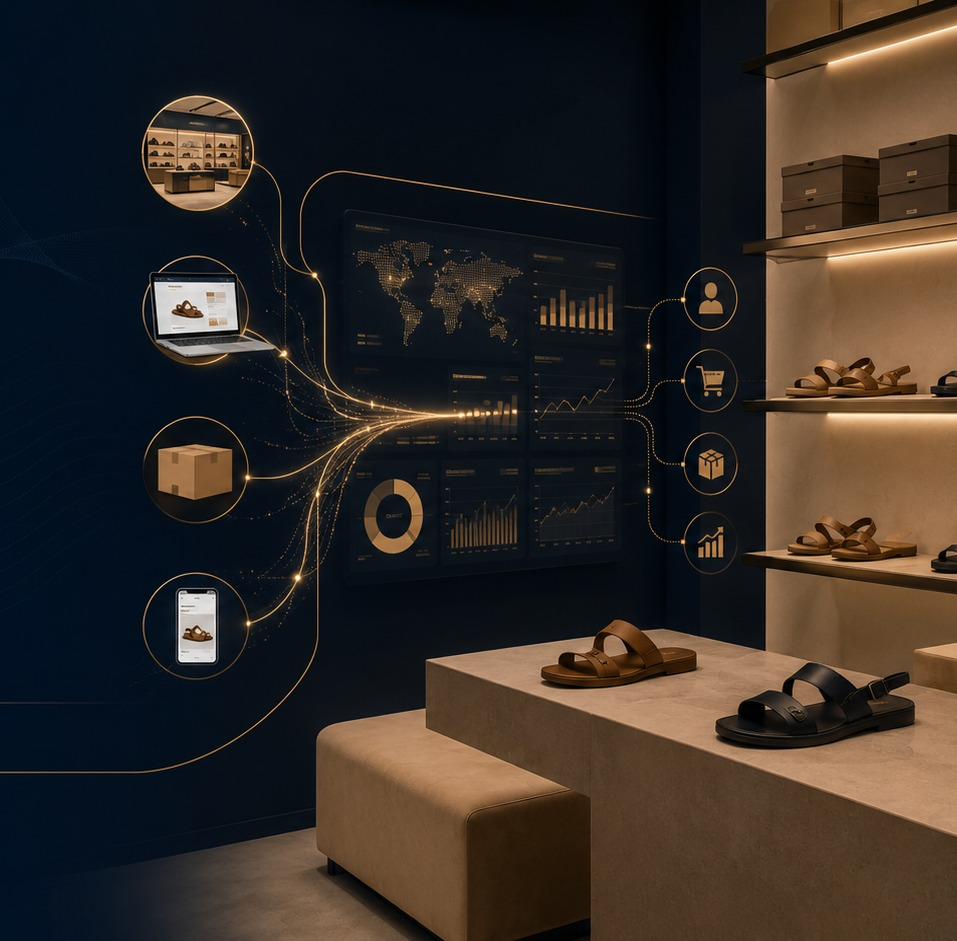
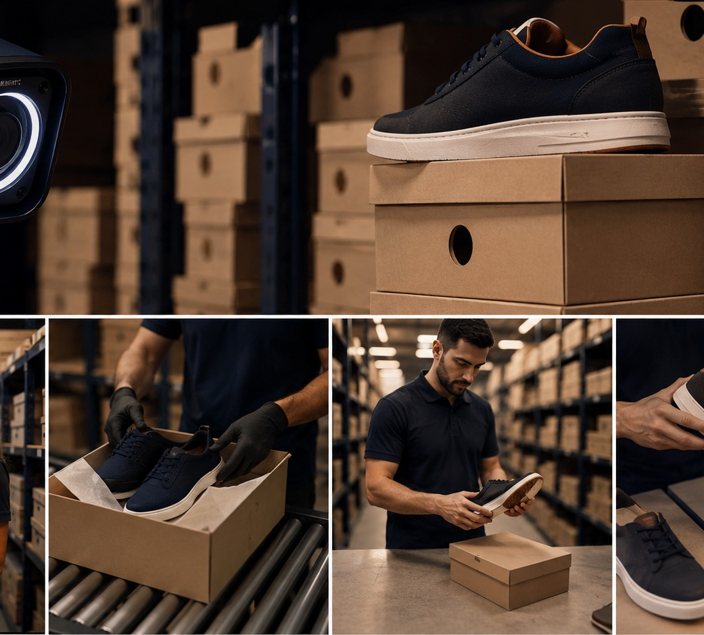

India footprint across 8 cities
Autonomous Retail Command Center
Protect full-price sales before a hero SKU goes to zero.
A working agentic retail layer that senses demand spikes, finds idle stock, recommends transfers, creates mock SAP/WMS actions, and leaves every decision auditable.

Data freshness
< 5 min
Stockout risk
Normal
Stores + D2C + marketplaces
Live based on stockout countdowns
Approved action impact
Hero SKU Protection
LIVE
Arizona / Boston stockout radar
Recommended Action
Best next movement
Trigger a demand spike to let agents recommend the first transfer.
AgentOps Core
Six agents. One governed decision loop.
Unified Retail Twin
One inventory truth across stores, D2C and marketplace
| SKU / Size | Location | Channel | Stock | Velocity | Cover | Risk |
|---|
From dashboards to decisions
AIonOS sits on top. Nothing replaced.
SAP inventory, Shopify D2C demand, POS sales, WMS stock and marketplace order signals flow into one governed decision layer.
IntelliWarehouse
Inventory AI closes the physical-digital gap

Mock Execution
SAP / WMS action console
Audit Trail
Governed autonomy, not black-box automation
Pilot Proof Pack